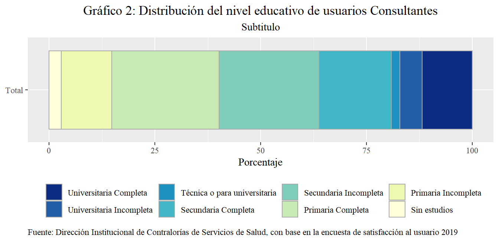

Chapter 4 Consulta Externa
La Encuesta de Satisfacción de la personas usuarias de los servicios de Consulta externa y hospitalización fue aplicada de manera presencial y se realizó en 137 establecimientos de salud, de los cuales 106 son Áreas de Salud, 29 son Hospitales y dos Centros Especializados, con una muestra promedio de 138.9 , 142.3 y 99.3 personas usuarias consultantes respectivamente.
El Área de Estadística en Salud estimó las muestras por establecimiento, los criterios considerados para esta estimación fueron las consultas de primera vez en el año en el establecimiento de salud del año previo a la encuesta, la variabilidad que presentó la satisfacción del año previo a la encuesta y el error de muestreo que se estimó en un 5,6% con un nivel de confianza de un 90%. Las muestras van a variar con base en los parámetros anteriores, los cuales nos permiten trabajar con un mismo criterio para la estimación de los tamaños de muestra para cada establecimiento.
A nivel nacional la muestra promedio por establecimiento es de 139 usuarios, la siguiente tabla muestra algunas características básicas de la muestra según Red Integrada de Prestación de Servicios de Salud y por Red Hospitalaria es la siguiente:
| Red | Establecimientos | Muestra promedio por establecimiento | Muestra |
|---|---|---|---|
| RIPSS Central Sur | 33 | 140.9 | 4649 |
| RIPSS Central Norte | 30 | 143.1 | 4292 |
| RIPSS Huetar Atlántico | 10 | 154.5 | 1545 |
| RIPSS Brunca | 11 | 130.3 | 1433 |
| RIPSS Chorotega | 17 | 135.9 | 2310 |
| RIPSS Pacifico Central | 14 | 143.1 | 2004 |
| RIPSS Huetar Norte | 10 | 133.3 | 1333 |
| Hospitales Nacionales | 4 | 159.5 | 638 |
| Hospitales Nacionales Especializados | 5 | 101.2 | 506 |
| Centros Especializados | 3 | 99.3 | 298 |
| Nacional | 137 | 138.7 | 19008 |
| Fuente: Dirección Institucional de Contralorías de Servicios de Salud, con base en la encuesta de satisfacción al usuario, año 2019 |
La división previamente descrita será la utilizada en el resto del documento, aclarando que:
Se incluyó el Hospital Maximiliano Peralta Jiménez en la Red de Hospitales Nacionales Generales ya que por división administrativa, este rinde cuentas a la Gerencia Médica.
Para facilidad en el análisis y por la diferencia que existe entre la población que atienden los Hospitales Nacionales Generales y los Hospitales Nacionales Especializados, se separó la Red Hospitalaria en dos tipos.
Se procede a continuación con la caracterización de la población de personas usuarias consultantes y posteriormente los resultados obtenidos a nivel global, regional y por tipo de establecimiento.
4.1 Características poblacionales de las personas usuarias de Consulta Externa
Las personas usuarias de consulta externa se caracterizaron por ser mayoritariamente costarricenses abarcando el 90.3% del total de la muestra, se detectó aproximadamente un 1% de la población consultada es indígena, y que del total de consultados el 25.8% son hombres, es decir la evidencia sugiere que la población femenina da un mayor uso a los servicios de salud de la institución. Se muestra a continuación la distribución por Red Integrada de Prestación de Servicios de Salud(Red):
| Red | Hombre | Mujer | Costarricense | Extranjero | Indígena | No Indígena |
|---|---|---|---|---|---|---|
| RIPSS Central Sur | 24.05 | 75.95 | 89.46 | 10.54 | 0.58 | 99.42 |
| RIPSS Central Norte | 24.28 | 75.72 | 87.86 | 12.14 | 0.37 | 99.63 |
| RIPSS Huetar Atlántico | 25.18 | 74.82 | 92.56 | 7.44 | 5.05 | 94.95 |
| RIPSS Brunca | 23.10 | 76.90 | 97.70 | 2.30 | 2.30 | 97.70 |
| RIPSS Chorotega | 27.88 | 72.12 | 92.12 | 7.88 | 0.22 | 99.78 |
| RIPSS Pacifico Central | 30.79 | 69.21 | 92.27 | 7.73 | 0.40 | 99.60 |
| RIPSS Huetar Norte | 23.71 | 76.29 | 80.72 | 19.28 | 0.90 | 99.10 |
| Hospitales Nacionales | 31.03 | 68.97 | 94.51 | 5.49 | 0.78 | 99.22 |
| Hospitales Nacionales Especializados | 27.87 | 72.13 | 94.66 | 5.34 | 0.40 | 99.60 |
| Centros Especializados | 35.57 | 64.43 | 93.62 | 6.38 | 0.67 | 99.33 |
| Total Nacional | 25.79 | 74.21 | 90.35 | 9.65 | 0.99 | 99.01 |
| Fuente: Dirección Institucional de Contralorías de Servicios de Salud, con base en la encuesta de satisfacción al usuario, año 2019 |
Se puede apreciar de la tabla anterior que el mayor porcentaje de población consultante indígena se presentó en la RIPSS Huetar Atlántica, la revisión de la distribución de personas usuarias indígenas de la RIPSS según establecimiento muestra que esta población está concentrada mayoritariamente en el Área de Salud de Talamanca y Valle la Estrella, la siguiente tabla muestra los establecimientos con mayor porcentaje de usuarios indígenas
| Red | Establecimiento | Indígena | No Indígena |
|---|---|---|---|
| RIPSS Huetar Atlántico | Área de Salud Talamanca | 29.41 | 70.59 |
| RIPSS Huetar Atlántico | Área de Salud Valle La Estrella | 13.18 | 86.82 |
| RIPSS Brunca | Área de Salud Buenos Aires | 8.76 | 91.24 |
| RIPSS Huetar Norte | Área de Salud Guatuso | 4.73 | 95.27 |
| RIPSS Huetar Atlántico | Área de Salud Matina | 4.64 | 95.36 |
| Fuente: Dirección Institucional de Contralorías de Servicios de Salud, con base en la encuesta de satisfacción al usuario, año 2019 |
El mayor porcentaje de población consultante extranjera se presentó en la RIPSS Huetar Norte, donde en 6 de los 10 establecimientos que la conforman, más del 25% de las personas usuarias consultantes son extranjeros, sin embargo, no es la red que tiene el establecimiento con mayor porcentaje de personas usuarias extranjeros, la siguiente tabla muestra los establecimientos con mayor concentración de extranjeros:
| Red | Establecimiento | Costarricense | Extranjero |
|---|---|---|---|
| RIPSS Central Norte | Área de Salud Carpio-León XIII | 52.59 | 47.41 |
| RIPSS Pacifico Central | Área de Salud Cóbano | 66.96 | 33.04 |
| RIPSS Central Sur | Área de Salud Santa Ana | 68.63 | 31.37 |
| RIPSS Huetar Norte | Área de Salud Los Chiles | 70.40 | 29.60 |
| RIPSS Huetar Norte | Área de Salud Pital | 71.54 | 28.46 |
| Fuente: Dirección Institucional de Contralorías de Servicios de Salud, con base en la encuesta de satisfacción al usuario, año 2019 |
En cuanto a la estructura etárea de la población consultante, la misma está compuesta principalmente de usuarios mayores a 25 años y es dominada por el género femenino tal como se expuso anteriormente, donde se aprecia una tendencia entre las mujeres a hacer un mayor uso de los servicios de salud entre los 25-34 años de edad, tal como se refleja en el siguiente gráfico:

Las estructura etárea de las distintas Redes Integradas de Prestación de Servicios de Salud, presentaron un comportamiento muy similar a la estructura etárea nacional, exceptuando la Red Hospitalaria y de Centros Especializados, destacando que la Red de Hospitales Especializados presenta las mayores discrepancias, lo cual se debe al Hospital de Niños y el Hospital Blanco Cervantes.
| Red | 18 años o menos | 19-24 | 25-34 | 35-44 | 45-54 | 55-64 | 65 años o más |
|---|---|---|---|---|---|---|---|
| RIPSS Central Sur | 2.47 | 11.29 | 21.60 | 18.31 | 16.35 | 16.33 | 13.66 |
| RIPSS Central Norte | 2.56 | 12.37 | 22.18 | 19.92 | 16.17 | 13.75 | 13.05 |
| RIPSS Huetar Atlántico | 3.88 | 13.14 | 23.56 | 20.78 | 17.61 | 12.75 | 8.28 |
| RIPSS Brunca | 3.35 | 10.33 | 24.56 | 21.63 | 18.07 | 12.77 | 9.28 |
| RIPSS Chorotega | 5.28 | 11.43 | 20.56 | 17.71 | 17.75 | 16.41 | 10.87 |
| RIPSS Pacifico Central | 2.05 | 15.32 | 23.50 | 18.01 | 16.52 | 13.02 | 11.58 |
| RIPSS Huetar Norte | 6.68 | 13.95 | 23.11 | 18.08 | 13.95 | 13.95 | 10.28 |
| Hospitales Nacionales | 1.10 | 7.84 | 13.95 | 13.95 | 18.81 | 24.61 | 19.75 |
| Hospitales Nacionales Especializados | 22.53 | 5.93 | 11.26 | 14.23 | 11.86 | 11.86 | 22.33 |
| Centros Especializados | 0.67 | 4.70 | 8.39 | 15.77 | 21.14 | 25.17 | 24.16 |
| Fuente: Dirección Institucional de Contralorías de Servicios de Salud, con base en la encuesta de satisfacción al usuario, año 2019 |
Concerniente al nivel educativo de las personas usuarias consultantes, la mayoría cuenta con educación primaria o secundaria y representa aproximadamente el 66.2% de la muestra, un 14.86% s no ha completado los estudios primarios, y el 11.8% de los consultantes tienen una educación universitaria completa:

Para las RIPSS la distribución por nivel educativo es similar entre ellas, donde aproximadamente el 80% de la población tiene educación primaria o secundaria, exceptuando la Red de Hospitales Generales y Centros Especializados, los cuales tienen una mayor concentración de personas usuarias con Educación Superior.
| Red | Sin estudios | Primaria | Secundaria | Superior |
|---|---|---|---|---|
| RIPSS Central Sur | 1.63 | 33.13 | 45.26 | 19.98 |
| RIPSS Central Norte | 2.03 | 35.48 | 42.57 | 19.92 |
| RIPSS Huetar Atlántico | 3.88 | 44.60 | 41.62 | 9.90 |
| RIPSS Brunca | 3.42 | 45.43 | 38.17 | 12.98 |
| RIPSS Chorotega | 3.77 | 38.01 | 44.72 | 13.51 |
| RIPSS Pacifico Central | 2.05 | 33.93 | 46.51 | 17.51 |
| RIPSS Huetar Norte | 8.18 | 43.36 | 36.61 | 11.85 |
| Hospitales Nacionales | 1.41 | 32.76 | 41.38 | 24.45 |
| Hospitales Nacionales Especializados | 3.75 | 48.22 | 30.83 | 17.19 |
| Centros Especializados | 2.01 | 34.90 | 40.94 | 22.15 |
| Nacional | 2.86 | 37.33 | 42.70 | 17.11 |
| Fuente: Dirección Institucional de Contralorías de Servicios de Salud, con base en la encuesta de satisfacción al usuario, año 2019 |
Es importante destacar sin embargo, que la RIPSS Huetar Norte es la región con mayor cantidad de usuarios con niveles educativos bajos y en conjunto con la Huetar Atlántico, Brunca y Chorotega es una de las regiones con menor cantidad de usuarios con nivel educativo superior.
El nivel socioeconómico(NSE) de las personas usuarias, se estimó utilizando características relacionadas a este aspecto, tales como ingresos, nivel educativo, personas que residen en el hogar entre otros. A partir de estas características se asignó un puntaje, el cual permitió calificar el NSE en seis categorías, donde AB representa la categoría más alta y E la más baja, de manera tal, que la relación de orden es la siguiente \(E < D < C- < C < C+ < AB\).
La distribución de la población consultada, según el nivel socioeconómico anteriormente descrito, se caracterizó por estar compuesta mayoritariamente de usuarios de clase Media Baja (\(C-\)) y Baja (\(D\)), agrupando aproximadamente el 73% de las observaciones, donde un 8,8% de las personas usuarias es de clase Media Alta (\(C+\)) y menos de un 1% la población encuestada es de clase alta (\(AB\))
El comportamiento del NSE por RIPSS presentó distribuciones muy similares a la Nacional, sin embargo, es importante destacar que para las RIPSS Huetar Atlántico, Brunca, Huetar Caribe, y Chorotega, entre el 80% y 86% de la población consultante tiene un nivel socioeconómico igual o menor a clase media baja, es decir cuatro de cada cinco consultantes tienen un nivel socioeconómico bajo o muy bajo:
| Red | E | D | C- | C | C+ | AB |
|---|---|---|---|---|---|---|
| RIPSS Central Sur | 1.01 | 28.16 | 40.98 | 18.82 | 10.65 | 0.39 |
| RIPSS Central Norte | 1.12 | 27.45 | 40.10 | 19.04 | 11.77 | 0.54 |
| RIPSS Huetar Atlántico | 3.37 | 43.24 | 40.13 | 9.90 | 3.24 | 0.13 |
| RIPSS Brunca | 2.58 | 43.61 | 37.68 | 10.96 | 4.95 | 0.21 |
| RIPSS Chorotega | 2.38 | 44.07 | 37.10 | 11.17 | 5.19 | 0.09 |
| RIPSS Pacifico Central | 1.45 | 31.79 | 42.56 | 16.02 | 8.03 | 0.15 |
| RIPSS Huetar Norte | 2.63 | 45.91 | 37.06 | 9.38 | 4.80 | 0.23 |
| Hospitales Nacionales | 0.78 | 23.04 | 38.87 | 21.32 | 15.20 | 0.78 |
| Hospitales Nacionales Especializados | 1.58 | 27.08 | 39.13 | 17.59 | 13.83 | 0.79 |
| Centros Especializados | 0.00 | 23.83 | 44.97 | 16.44 | 13.42 | 1.34 |
| Nacional | 1.66 | 33.68 | 39.83 | 15.68 | 8.80 | 0.35 |
| Fuente: Dirección Institucional de Contralorías de Servicios de Salud, con base en la encuesta de satisfacción al usuario, año 2019 |
La facilidad para el traslado de las personas usuarias, desde su casa al establecimiento de salud, fue reportado como difícil por un 12.3% y sencillo por un 72.6%, comportamiento variante segun RIPSS, donde el mayor porcentaje de consultantes que indican dificultades para trasladarse se encuentran en la Red de Centros Especializados y Hospitales Nacionales:
| Red | Difícil | Ni fácil ni difícil | Fácil |
|---|---|---|---|
| RIPSS Central Sur | 6.39 | 10.28 | 83.33 |
| RIPSS Central Norte | 7.43 | 13.12 | 79.45 |
| RIPSS Huetar Atlántico | 17.35 | 20.06 | 62.59 |
| RIPSS Brunca | 21.14 | 19.05 | 59.80 |
| RIPSS Chorotega | 14.11 | 17.88 | 68.01 |
| RIPSS Pacifico Central | 12.33 | 14.87 | 72.80 |
| RIPSS Huetar Norte | 19.43 | 20.33 | 60.24 |
| Hospitales Nacionales | 23.98 | 18.34 | 57.68 |
| Hospitales Nacionales Especializados | 14.82 | 16.40 | 68.77 |
| Centros Especializados | 28.19 | 24.50 | 47.32 |
| Nacional | 12.26 | 15.15 | 72.59 |
| Fuente: Dirección Institucional de Contralorías de Servicios de Salud, con base en la encuesta de satisfacción al usuario, año 2019 |
La revisión de este indicador controlando por Nivel Socioeconómico, sugiere que a menor NSE las personas usuarias reportan una mayor dificultad para el trasladarse desde su casa al establecimiento de Salud, similarmente ocurre con el Nivel Educativo:
| Nivel Socioeconómico | Difícil | Ni fácil ni difícil | Fácil | Total |
|---|---|---|---|---|
| AB | 1.5 | 10.4 | 88.1 | 100 |
| C+ | 4.3 | 8.5 | 87.2 | 100 |
| C | 6.6 | 10.6 | 82.9 | 100 |
| C- | 11.4 | 16.1 | 72.6 | 100 |
| D | 17.5 | 17.4 | 65.0 | 100 |
| E | 25.0 | 26.3 | 48.7 | 100 |
| Fuente: Dirección Institucional de Contralorías de Servicios de Salud, con base en la encuesta de satisfacción al usuario, año 2019 |
El tipo de citas asignadas corresponde a un 73.65% en Medicina General, seguido por un 17.5% para citas es de medicina especializada, un 8.86% para citas de odontología, la distribución por RIPSS es la siguiente:
En cuanto a los medios para solicitud de citas, a nivel nacional el 74.4% de las personas usuarias solicitan la cita de manera presencial, un 13.71% reporta que fue solicitada por internet o vía telefónica, y un 12% indicó que no solicitó la cita, es decir le fue asignada por el establecimiento ya sea por reprogramación o citas de control.
A nivel de redes el comportamiento es variante, manteniéndose como predominante la solicitud de cita presencial, especialmente en establecimientos hospitalarios, lo cual es un comportamiento esperado, en primer lugar, por la presencia de más servicios de especialidades en estas redes y en segundo porque las citas de especialidad solo pueden ser solicitadas presencialmente.
| Red | Presencial | Vía telefónica | Internet | No solicitó cita | Total |
|---|---|---|---|---|---|
| RIPSS Central Sur | 74.68 | 3.64 | 8.58 | 13.10 | 100 |
| RIPSS Central Norte | 69.04 | 5.15 | 18.73 | 7.08 | 100 |
| RIPSS Huetar Atlántico | 75.73 | 6.21 | 8.03 | 10.03 | 100 |
| RIPSS Brunca | 84.09 | 4.75 | 5.72 | 5.44 | 100 |
| RIPSS Chorotega | 74.72 | 3.38 | 5.71 | 16.19 | 100 |
| RIPSS Pacifico Central | 69.21 | 2.84 | 7.73 | 20.21 | 100 |
| RIPSS Huetar Norte | 72.99 | 2.93 | 8.03 | 16.05 | 100 |
| Hospitales Nacionales | 84.95 | 3.76 | 1.10 | 10.19 | 100 |
| Hospitales Nacionales Especializados | 88.54 | 1.78 | 0.79 | 8.89 | 100 |
| Centros Especializados | 79.87 | 9.06 | 1.01 | 10.07 | 100 |
| Fuente: Dirección Institucional de Contralorías de Servicios de Salud, con base en la encuesta de satisfacción al usuario, año 2019 |
Una vez solicitada la cita, el tiempo que espera la persona usuaria para acceder al establecimiento es inferior a la semana en el 66.8% de los casos y tan solo un 13.9% mayor a 90 días, destacando en este aspecto, las solicitudes de citas realizadas vía Internet y Teléfono, en las que respectivamente el 93.7% y 79.2% de los consultados reportan haber esperado menos de 8 días.
| Tiempo | Internet | Presencial | Vía telefónica |
|---|---|---|---|
| Para el mismo día | 26.14 | 49.38 | 27.54 |
| Al día siguiente | 55.97 | 6.37 | 34.14 |
| Para entre 2 a 7 días | 11.56 | 6.93 | 17.64 |
| Para entre 8 a 30 días | 4.46 | 13.12 | 8.63 |
| Para entre 31 a 90 días | 0.88 | 8.25 | 4.44 |
| Para entre más de 90 días (3 meses) | 0.99 | 15.95 | 7.61 |
| Total | 100.00 | 100.00 | 100.00 |
| Fuente: Dirección Institucional de Contralorías de Servicios de Salud, con base en la encuesta de satisfacción al usuario, año 2019 |
En el caso de solicitud presencial el 49.4% de las citas solicitadas fueron asignadas para el mismo día, y tienen el mayor porcentaje de usuarios que esperaron más de 30 días, lo cual puede ser explicado por la existencia de las citas de especialidad y la alta demanda de estas (lo que se ha visto históricamente reflejado en las listas de espera) y por las citas de control las cuales son otorgadas a mediano y corto plazo.
La distribución de asignación de citas según las distintas Redes Integradas de Prestación de Servicios de Salud refleja que la Red Hospitalaria y de Centros Especializados tienen los porcentajes más altos de tiempo de espera entre la solicitud y la asignación de las citas, tal y como se muestra a continuación:
| Red | Menos de 8 días | Entre 8 a 30 días | Entre 31 y 90 días | Más de 90 días |
|---|---|---|---|---|
| RIPSS Central Sur | 73.36 | 9.48 | 6.41 | 10.75 |
| RIPSS Central Norte | 73.67 | 9.60 | 5.97 | 10.76 |
| RIPSS Huetar Atlántico | 68.85 | 11.87 | 6.26 | 13.02 |
| RIPSS Brunca | 54.76 | 15.13 | 10.26 | 19.85 |
| RIPSS Chorotega | 67.98 | 13.53 | 5.99 | 12.50 |
| RIPSS Pacifico Central | 70.04 | 9.82 | 6.32 | 13.82 |
| RIPSS Huetar Norte | 68.25 | 12.61 | 6.53 | 12.61 |
| Hospitales Nacionales | 25.31 | 22.51 | 15.71 | 36.47 |
| Hospitales Nacionales Especializados | 33.04 | 21.09 | 16.09 | 29.78 |
| Centros Especializados | 30.97 | 29.48 | 14.55 | 25.00 |
| Total | 66.84 | 11.96 | 7.27 | 13.93 |
| Fuente: Dirección Institucional de Contralorías de Servicios de Salud, con base en la encuesta de satisfacción al usuario, año 2019 |
Este prolongamiento en el tiempo de espera en las Redes Hospitalarias y de Centros Especializados, parece deberse en parte al tipo de oferta de servicios que los establecimientos de estas Redes brindan, debido a que al realizar el cruce entre este tiempo de espera y el tipo de establecimiento que otorga la cita, se observa que en Centros Especializados y Hospitales, el porcentaje de usuarios que reportan que el tiempo de espera entre la solicitud y asignación de de la cita fue mayor a 8 días se incrementa en relación con las Áreas de Salud, tal y como se muestra a continuación:
| Tipo de Establecimiento | Menos de 8 días | Entre 8 a 30 días | Entre 31 y 90 días | Más de 90 días |
|---|---|---|---|---|
| Área de Salud | 76.88 | 9.48 | 5.40 | 8.24 |
| Centro Especializado | 30.97 | 29.48 | 14.55 | 25.00 |
| Hospital | 32.41 | 19.82 | 13.62 | 34.15 |
| Fuente: Dirección Institucional de Contralorías de Servicios de Salud, con base en la encuesta de satisfacción al usuario, año 2019 |
Finalmente, en relación a la accesibilidad para obtener la cita en el establecimiento el 58.7% de las personas usuarias consideran que es posible obtener la cita en cualquier día de la semana, la distribución de este indicador según RIPSS se muestra a continuación
| Red | Si | No |
|---|---|---|
| RIPSS Central Sur | 65.09 | 34.91 |
| RIPSS Central Norte | 60.38 | 39.62 |
| RIPSS Huetar Atlántico | 54.96 | 45.04 |
| RIPSS Brunca | 45.68 | 54.32 |
| RIPSS Chorotega | 50.72 | 49.28 |
| RIPSS Pacifico Central | 63.98 | 36.02 |
| RIPSS Huetar Norte | 56.17 | 43.83 |
| Hospitales Nacionales | 53.58 | 46.42 |
| Hospitales Nacionales Especializados | 67.61 | 32.39 |
| Centros Especializados | 55.97 | 44.03 |
| Fuente: Dirección Institucional de Contralorías de Servicios de Salud, con base en la encuesta de satisfacción al usuario, año 2019 |